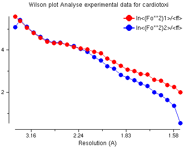
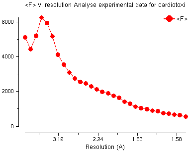
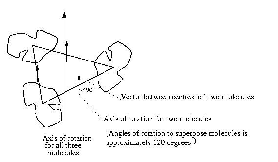
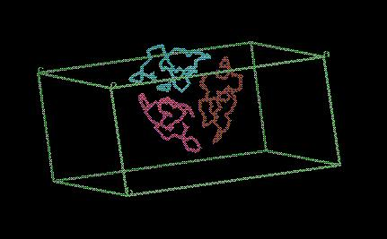
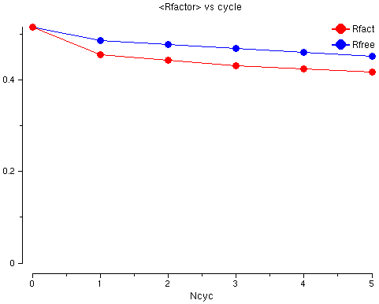

See also the accompanying document giving background information.
This tutorial solves one protein structure using the structure of a similar protein.
In the following instructions, when you need to type something, or click on something, it will be shown in red. Output from the programs or text from the interface is given in green.
The example is to determine the structure of cardiotoxin for which we know:
This protein is now in the PDB as 1tgx.pdb (solved by A.Bilwes,B.Rees,D.Moras J.Mol.Biol. 1994, V239, p-122).
Files in directory DATA:
| model.pdb | contains coordinates of the model we will use to solve cardiotoxin |
| cardiotoxin.mtz | contains the experimental data |
Files in directory RESULTS:
| matthews.log | the log file from Cell Content Analysis |
| mr_analyse.log | the log file from Analyse Data |
| molrep.log | the log file from Molrep |
| model_molrep1.pdb | the output coordinates from Molrep |
| mr_refmac.log | the log file from Refmac5 refinement |
Most protein crystals contain about 50% water. We will calculate the number of protein molecules in the asymmetric unit of our crystal which will give a water content of about 50%.
Select the Molecular Replacement module and open the Cell Content Analysis task window.
Enter a job title such as
Select the MTZ file - the program will read the space group and cell dimensions from the MTZ file (so you do not need to type them in):
Enter the molecular weight of the protein. The protein has 60 residues and we say average residue weight is 100 Dalton. So
Click on Run Now.
Look at the output in the window - it shows a table of the Matthews coefficient and percentage solvent content dependent on the number of molecules that are in the asymmetric unit.
For estimated protein molecular weight 6000.0 Nmol/asym Matthews Coeff %solvent 1 6.6 81.2 2 3.3 62.5 3 2.2 43.7 4 1.7 24.9 5 1.3 6.1
We are looking for the number of molecules to give about 50% solvent. It looks as if our crystal will have three molecules in the asymmetric unit but two molecules is also possible.
Close the Cell Content Analysis window.
We will do two things:
Create a Patterson map and search it for peaks. We expect a big peak at the origin (position 0,0,0) but if there is another big peak (sometimes up to 0.25 the size of the origin peak) then there may be a translation between the molecules in the asymmetric unit and it will be more difficult to solve.
The theory behind this is explained on the web site of Bernhard Rupp:
http://www-structure.llnl.gov/xray/101index.html
For more information, go to the section on Phasing Techniques on this website, and click on NCS with native Patterson maps
Create a Wilson plot which is an indication of the self consistency of the data. Also find the average B-value of the data - this can be used to help the molecular replacement program.
Select the Analyse Data for MR task and enter a job title such as
Select the input experimental data:
The output map file will be automatically set to:
Select input model:
In the folder Define Map enter the resolution limits:
In the folder Wilson Plot for B Analysis enter the Number of residues in the asymmetric unit - i.e.:
number of molecules in asymmetric unit * number of residues per molecule
= 3 * 60 = 180, so:
Click on Run -> Run Now. You can now Close the Analyse Data window.
Look at the log file when the job has finished. In the main CCP4i window click on the job called mr_analyse and then from menu View Files from Job select View Log File. In the log file is output from the programs FFT which created the Patterson map and PEAKMAX which searched for peaks in the map. To find what we want click on the Find button and enter the text List of peaks. You now see a table which starts like this:
Count Site Height Grid Fractional coordinates Orthogonal coordinates 1 1 100.00 0 0 0 0.0000 0.0000 0.0000 0.00 0.00 0.00 2 2 17.56 5 0 0 0.0641 0.0000 0.0000 5.05 0.00 0.00 3 3 15.24 11 0 0 0.1339 0.0000 0.0000 10.54 0.00 0.00 4 4 12.83 20 0 0 0.2525 0.0000 0.0000 19.87 0.00 0.00 5 5 14.52 28 0 0 0.3530 0.0000 0.0000 27.78 0.00 0.00 6 6 16.12 38 0 0 0.4688 0.0000 0.0000 36.89 0.00 0.00 7 7 14.84 16 0 2 0.2029 0.0000 0.0331 15.12 0.00 1.65 8 8 16.33 6 0 3 0.0734 0.0000 0.0552 4.37 0.00 2.75 9 9 14.84 36 0 3 0.4507 0.0000 0.0470 34.27 0.00 2.34 10 10 16.35 24 0 4 0.3036 0.0000 0.0716 22.06 0.00 3.57
The peaks are scaled to 100.0 for the biggest peak, which is at position x=0,y=0,z=0 - this is as we expect. The next biggest peak is 17.56 - this is much smaller so there is no translation (good!).
Then there is a table with the 50 highest peaks scaled with Height/rms, which starts with:
Order No. Site Height/Rms Grid Fractional coordinates Orthogonal coordinates
1 1 1 66.97 0 0 0 0.0000 0.0000 0.0000 0.00 0.00 0.00
2 529 488 66.97 40 20 0 0.5000 0.5000 0.0000 39.35 20.20 0.00
3 532 491 12.01 36 20 1 0.4454 0.5000 0.0253 34.40 20.20 1.26
4 73 2 12.01 4 0 55 0.0546 0.0000 0.9821 -20.75 0.00 48.96
5 135 126 11.77 3 4 1 0.0339 0.1025 0.0192 2.18 4.14 0.96
6 469 411 11.77 37 16 55 0.4661 0.3975 0.9821 11.62 16.06 48.96
7 525 484 11.77 37 19 51 0.4671 0.4784 0.9106 13.53 19.33 45.39
8 78 72 11.77 3 1 5 0.0329 0.0216 0.0894 0.31 0.87 4.46
9 32 32 11.23 8 0 22 0.1010 0.0000 0.3953 -2.13 0.00 19.71
10 572 530 11.23 32 20 34 0.3990 0.5000 0.6047 15.97 20.20 30.15
|
Hints In fact the values you get may be different, for example: Order No. Site Height/Rms Grid Fractional coordinates Orthogonal coordinates
1 1 1 58.43 0 0 0 0.0000 0.0000 0.0000 0.00 0.00 0.00
2 4 2 3.47 4 0 55 0.0546 0.0000 0.9821 -20.75 0.00 48.96
3 10 2 3.47 36 20 1 0.4454 0.5000 0.0253 34.40 20.20 1.26
but the comments above still apply. You may also see a different number of peaks, for example: Order No. Site Height/Rms Grid Fractional coordinates Orthogonal coordinates
1 6 1 38.66 28 16 0 0.5000 0.5000 0.0000 39.35 20.20 0.00
2 8 1 24.28 28 16 43 0.5000 0.5000 0.9773 14.42 20.20 48.72
3 5 2 3.34 24 16 0 0.4269 0.5000 0.0000 33.60 20.20 0.00
4 3 3 3.10 3 0 39 0.0597 0.0000 0.8826 -17.82 0.00 44.00
In this case x=0.5,y=0.5,z=0.0 is the centring operation of the spacegroup of the data (C2). It is a crystallographic translation of the origin peak (as opposed to a non-crystallographic translation). The difference is an effect of the width of the Patterson origin peak being related to the resolution range of data included when generating the Patterson map. At lower resolutions the origin peak may overlap neighbouring grid points in the map, and result in apparent extra peaks in these adjacent positions. Including higher resolution data narrows the origin peak and reduces the effect; try changing the high resolution limit from 4.0 Å to 3.0 Å in the Define Map folder, and re-run. |
Now go to the end of the log file where you will see:
Average B value for experimental data = 18.178 Average B value for model = 20.000 Running aMoRe: set the Tabling parameter BADD (the amount to add to the Bvalue) to -1.822
Look at the graphs in the log file. From the View Files from Job menu select View Log Graphs. There are three tables in the log file - look at them in turn:
Wilson Plot

This is a usual Wilson plot - no problems here!
Amplitude Analysis v. Resolution

This plot is the usual shape for amplitude versus resolution plot with 'water' peak at about 4Å.
Average B v. Residue
This shows the difference from the mean - in this PDB file all the B values are set to 20. This is not interesting for this protein.
Quit (or File -> Exit) from the two windows which display the log file and the graphs. Close all other windows except the main window.
This program will solve the structure - you must input a coordinate file for a protein similar to the protein in the crystal and the program will output a coordinate file with the molecule moved to the right position(s) in the crystal.
From the Molecular Replacement module select MolRep - auto MR and enter a job title such as
The default mode for running MolRep is good:
Select the input experimental data file:
Select the input model:
In the folder Search Parameters (...):
Click on Run -> Run Now.
MolRep will take a long time to run - if it is too long you can see the output files: $RESULTS/molrep.log and $RESULTS/model_molrep1.pdb.
Look at the log file by selecting View Any File from the right side of the main window, then select:
then
and then click on Display and Exit.
The log file lists many possible solutions. After the rotation function:
Number of peaks : 50
alpha beta gamma theta phi chi Rf Rf/sigma
Sol_RF 1 28.27 60.29 182.91 148.91 -167.32 153.12 0.3796E+09 5.31
Sol_RF 2 40.54 72.23 275.07 117.37 152.74 83.17 0.3249E+09 4.54
Sol_RF 3 162.83 58.08 180.35 104.76 -98.76 60.26 0.3060E+09 4.28
Sol_RF 4 325.42 64.83 249.36 146.36 128.03 150.77 0.3013E+09 4.21
Sol_RF 5 64.03 63.07 262.23 115.31 170.90 70.70 0.2954E+09 4.13
This shows the possible rotation of the molecule: alpha beta gamma (or theta phi chi in polar coordinates). The score for the solution is the Rfactor.
After a translation function:
alpha beta gamma Xfrac Yfrac Zfrac Dens/sig R-fac Corr
Sol_TF_1 1 28.27 60.29 -177.09 0.091 0.000 0.297 3.91 0.598 0.139
Sol_TF_1 2 28.27 60.29 -177.09 0.611 0.000 0.342 3.35 0.596 0.137
Sol_TF_1 3 28.27 60.29 -177.09 0.174 0.000 0.105 3.23 0.602 0.125
Sol_TF_1 4 28.27 60.29 -177.09 0.870 0.000 0.349 2.82 0.606 0.107
Sol_TF_1 5 28.27 60.29 -177.09 0.268 0.000 0.471 2.67 0.607 0.120
This shows the rotation (alpha beta gamma) and translation as fractional coordinates (Xfrac Yfrac Zfrac). There are different ways to score the solutions: density/sigma, Rfactor, Correlation coefficient. The correlation coefficient is the best - this is bigger for good solutions.
The program runs the translation function three times to find three different molecules. For the second run of the translation function it will take the best solution from the first run and try to find another molecule which will fit well with the first solution. For the third run of the translation function it will keep the best solution from the first run and the second run and try to find molecule number three.
It is not possible to say what is a good score - this will depend on many things but it is good if the best score (the correlation factor in the column labelled Corr) is much bigger than the second best score. When you are looking for several molecules the best score for the first (and perhaps second) molecule will not be very good but you hope that the best score for all three molecules is much better than for other possible solutions.
There are three molecules in the output PDB file - these have chain names: A, B and C.
The diagram below shows how these molecules are related: there are three molecules and the vectors between the centres of the molecules. The direction of the axis of rotation to map one molecule onto another is shown; it is at 90 degrees to the vector between the molecule centres. To map one molecule onto the other needs some translation and a rotation of approximately 120 degrees (in fact the angles are 124 degrees, 104 degrees and 131 degrees which are surprisingly different from 120 degrees). This is right for a three-fold rotation axis and this shows there is a rotation axis and not a screw axis. This helps to confirm that the solution is correct because MolRep did not use this information to find the solution.

The output file model_molrep1.pdb contains three copies of the input model moved to the right positions in the asymmetric unit. The three molecules will pack together something like this:

It is not always certain that the molecular replacement is correct - the best way to test it is to refine the model. The best way to start refinement when there is more than one molecule in the asymmetric unit is to use the non-crystallographic symmetry to restrain the refinement, i.e. the refinement program must keep all the molecules similar.
Select the Refinement module and open the Run Refmac5 task window.
Enter a job title such as:
In the Files folder, enter the name of the data file:
The output MTZ file will be automatically set to:
Enter the name of the input files - this is the coordinate file output from MolRep:
The output PDB file will be automatically set to:
Now you must tell the program that it must keep the non-crystallographic symmetry by keeping the three chains similar. Click on the line with the folder title
Click on the button
On the first line, input:
Underneath this line, choose:
Then click Add chain and select:
Click on Run -> Run Now.
You can look at a log file by using View Any File and selecting
and then select file:
and then click on Display and Exit.
Go to the bottom of the list of Tables in File and select

The graph shows the Rfactor (red) and the Free Rfactor (blue) for 6 cycles of refinement. The Free Rfactor goes down from 52% to 45%. The Rfactor is high - this is normal after molecular replacement because we do not have a good model yet but it goes down so we probably have a good solution.
On to the next tutorial - Refinement.
Side-step to the alternative for step 5c - Molecular Replacement with AMoRe.
Back to the previous tutorial - Experimental Phasing (by MAD).
Back to the index.
To find out more:
MolRep: http://www.ysbl.york.ac.uk/~alexei/molrep.html
CCP4: http://www.dl.ac.uk/CCP/CCP4/
Prepared by Liz Potterton (lizp@ysbl.york.ac.uk) & Eleanor Dodson, July 2000
Additional material: Peter Briggs & Martyn Winn, February 2001
Adapted by Maria Turkenburg, 2002-2003